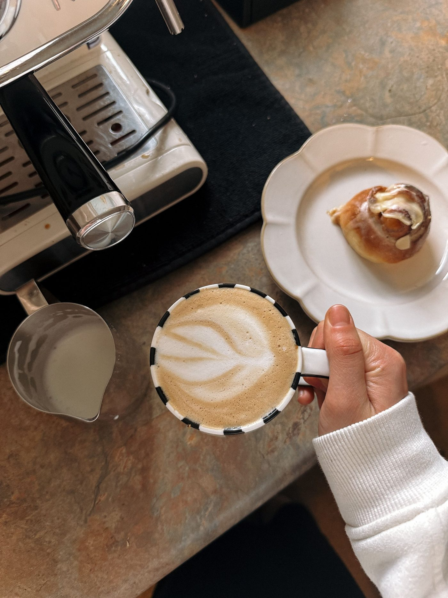

A neighborhood coffee shop in downtown Long Beach, in a historic former bank building, roasting coffee on site.
Bankhouse Coffee is a neighborhood coffee shop in downtown Long Beach, in a historic former bank building, featuring coffee roasted on site. The menu includes an iced salted caramel latte with cold foam, a white mocha frappuccino, a matcha latte, a spiced mocha, a lavender white mocha, scones including blueberry scones, and cold brew. The shop offers free Wi-Fi, outdoor seating, and board games.
Call to ask: +1 228-868-2660
Services
| Coffee roasted on site | Coffee roasted in the shop, in a historic former bank building. |
| Iced salted caramel latte with cold foam | An iced latte with salted caramel and a cold foam top. |
| White mocha frappuccino | A blended white mocha drink served cold. |
| Matcha latte, spiced mocha, lavender white mocha | Three signature drinks from the menu: a matcha latte, a spiced mocha, and a lavender white mocha. |
| Scones including blueberry scones | Scones baked for the shop, including blueberry scones. |
| Cold brew | Coffee steeped cold and served over ice. |
| Free Wi-Fi, outdoor seating, board games | Free Wi-Fi inside, seating outside, and board games to play in the shop. |
Photos


All photos on this page are stock photos, not photos of this business.